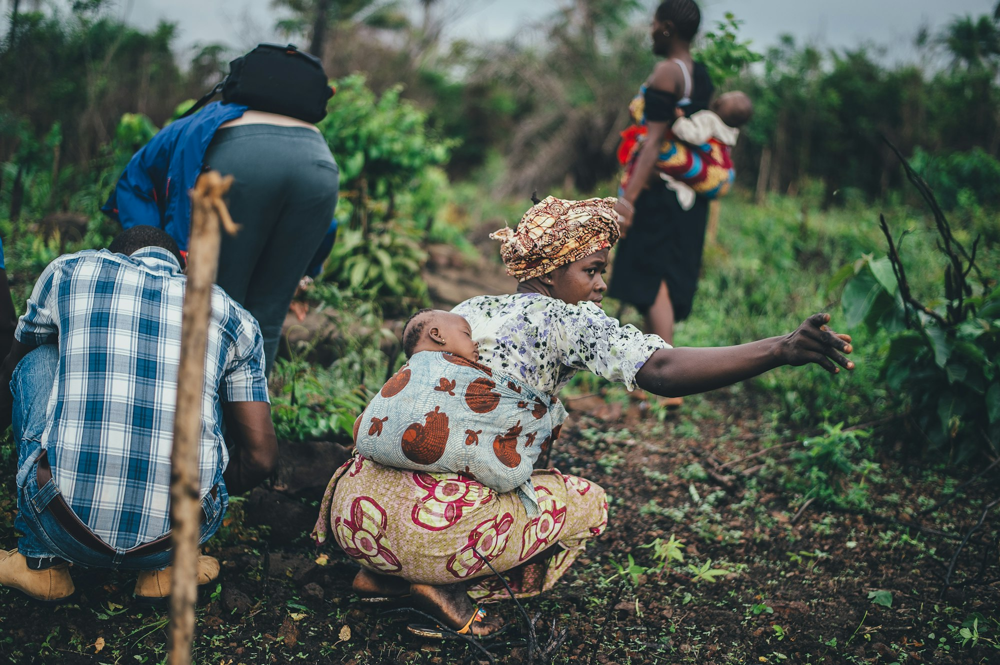

BeSpoke Afrika works with underserved communities to co-create, test, and scale inclusive solutions that strengthen livelihoods and food systems, building resilience and unlocking opportunity for all.
We design and deliver practical, people-centered programs that improve household and community wellbeing — anchored in food systems strengthening and natural resource governance, with climate adaptation and youth economic opportunity woven through our work as cross-cutting priorities. Our approach is rooted in evidence and inclusion: we combine data analytics with participatory methods to ensure our work reflects both rigorous measurement and lived experience.
We treat data as a tool for action, not just collection. Our adaptive management approach means we continuously learn and adjust, keeping programs flexible and responsive to community needs. Leveraging mobile surveys, geospatial tools, and real-time feedback loops, we reach remote communities effectively and adapt based on what we learn.
Above all, we believe development must be co-owned. That is why we work side by side with communities, involving them in every step — from project inception and design to evaluation and scaling up — to ensure sustainable and relevant outcomes.
